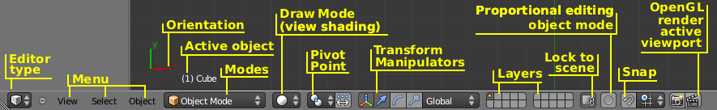

简介¶
3D视图用于各种3D场景中各种操作的交互，如建模，动画，纹理绘制等。
标题栏¶
标题栏包含当前 模式 的各种菜单和控件。

3D视图标题栏。
控件¶
- 模式(Modes)
3D视图有 多种模式 用于编辑不同数据：
- 物体模式(Object Mode)
- 编辑模式(Edit Mode)
- 姿态模式(Pose Mode)
- 雕刻模式(Sculpt Mode)
- 顶点绘制(Vertex Paint)
- 权重绘制(Weight Paint)
- 纹理绘制(Texture Paint)
- 粒子编辑(Particle Edit)
- 视窗着色(View Shading)
- 允许你改变物体在视窗中的显示方式。 了解更多关于不同的着色方式
- 轴心点(Pivot Point)
用来改变很多网格操作工具中用到的参考点(或 轴心点 )。
详见 轴心点选项
- 变换操纵器(Transform Manipulator)
这些方便的选择器让你可以抓着(点击鼠标)它们的控件通过移动鼠标在相应的轴上移动或旋转物体。
详见： 变换操作控制器
- 层(Layer)
- 层工具文档参见 层。
- 锁定到场景(Lock to Scene)
在层按钮右边的“锁定”按钮默认是开启的。这就意味着在这个视图中的活动层和摄像机是属于整个场景的(那些在渲染的时候使用到的)。因此，所有锁定的3D视图会共用同样的活动层和摄像机。当你在一个视图中改变它们的时候，这个变化会马上反应到所有锁定的视图。
但是如果你关闭“锁定”按钮，你就可以针对这个视图指定不同的活动层和摄像机。如果你不愿意你的工作区(视图)被完整的场景弄乱，同时又想有一个完整场景的视图做参考的时候，这个功能有可能能帮上忙(比如同时显示所有的层)。或者开多个视图，每个都有不同的活动摄像机。你可以用
Ctrl-Numpad0来使活动物体变成活动摄像机。- 比例化编辑(Proportional Edit)
- 比例化编辑。
- 吸附(Snap)
- 控制 吸附工具 辅助物体的变换和建模。
- OpenGL渲染(OpenGL Render)
- 这个渲染按钮渲染一个3D视窗的OpenGL版。查看 OpenGL渲染 获得更多信息。